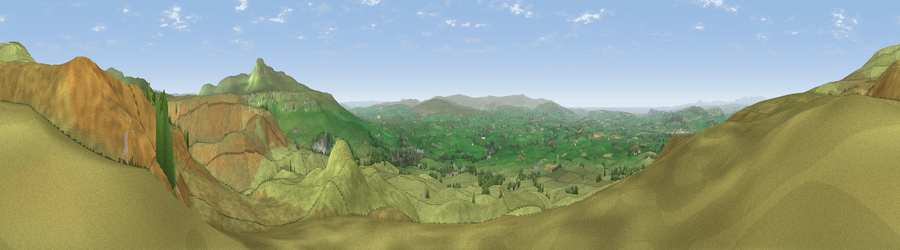

Tow Scar
#3585 in England · top 7% of its area beats it · near Thornton in LonsdaleThe view, rendered

A 360° render of this exact spot computed from the terrain model, tree cover and land cover — summer colours, afternoon light, calibrated against photographs of famous viewpoints. Real trees, hedges and buildings will differ in detail.
The panorama
Grey silhouette: terrain skyline in each direction (720 bearings, Earth curvature and refraction included). Dashed green: skyline with trees (+15 m) and buildings (+8 m) as obstacles. Blue strip: how far the ground is visible on each bearing.
Where the view opens
Wedge length = distance to the farthest visible ground on that bearing (vegetation-aware). Rings at 10, 25 and 50 km.
What fills the view
96% grassland · 3% woodland ·
Angular shares of the visible panorama (visual magnitude), not map area. Landscape diversity 0.09 (0–1 Shannon).
Key numbers
More beautiful places nearby
The staircase of upgrades: each row has a higher view potential than everything closer. Driving times are estimates from straight-line distance, calibrated against real road routing — check an actual route before setting out.
| Place | Direction | Drive | Score |
|---|---|---|---|
| Dodson's Hill | N · 2 km | ~5 min | 74.9 |
| Viewpoint near Ingleton | ESE · 6 km | ~12 min | 79.5 |
| Crag Hill | N · 7 km | ~15 min | 80.0 |
| Warton Crag | W · 19 km | ~33 min | 83.2 |
| Viewpoint near Grange-over-Sands | W · 29 km | ~46 min | 83.4 |
| Viewpoint near Finsthwaite | WNW · 32 km | ~49 min | 90.3 |
| The Knoll | S · 388 km | ~373 min | 91.0 |
54.17823, -2.48531 · source: osm peak · position refined by local search. Computed location — check access rights before visiting.